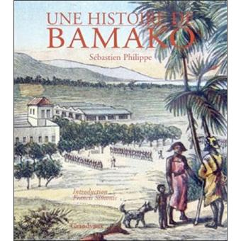

Histoire de la ville
.jpeg)
Le site de Bamako a été occupé dès la préhistoire comme l’ont confirmé les fouilles archéologiques de
Magnambougou.
Bamako, du bambara « bàmakɔ̌ » (qui signifie « marigot du crocodile »), a été fondée à la fin du XVIe siècle par
les Niaré (Niakhaté, d’origine Soninké venus du Wagadou et du Kaarta)3,4. Le crocodile étant le fétiche de Bamako,
une jeune fille vierge lui était donnée à manger chaque année5.
Le fort construit en 1883.
Les trois crocodiles qui symbolisent Bamako trouvent leur origine à partir des trois marigots qui traversaient
Bamako : Lido, Diafarana et Bèlèsôkô. Les marigots se rejoignaient environ à 500 mètres à l'est de l'Hôtel de
l'Amitié de Bamako (fruit de la coopération égypto-malienne aux lendemains des indépendances) pour se jeter
ensuite dans le Niger.

Gustave Borgnis-Desbordes en 1886.
Le marché rose.
À la fin du XIXe siècle, Bamako est un gros village fortifié d'environ 600 habitants, lorsque le 1er février 1883,
les Français, y pénétrent avec Gustave Borgnis-Desbordes.
En 1895, elle devient chef-lieu de cercle avant de devenir capitale du Haut-Sénégal et Niger le 17 octobre 1899,
puis du Soudan français en 1920.
En 1904, la ligne du chemin de fer Dakar-Niger est inaugurée. En 1905, commence la construction de l’Hôpital du
point G. Entre 1903 et 1907 est construit le palais de Koulouba, palais du gouverneur puis siège de la présidence
de la République à partir de l’indépendance en 1960.
Henri Terrasson de Fougères, gouverneur intérimaire (en 1920 et 1921), puis gouverneur du Soudan français (actuel
Mali) du 26 février 1924 à 1931, réside au palais de Koulouba. Il est à l'origine d'un grand nombre d'aménagement
urbains.
La culture Bamakoise
Bamako étant la capitale politique et administrative, les principaux ministères se situent dans le quartier du
Fleuve. La présidence de la République est installée dans le palais de Koulouba, situé sur une colline baptisée
par les Bamakois « colline du pouvoir ». Ce palais a été construit en 1908 pour abriter la résidence du gouverneur
du Soudan français pendant la colonisation.
Le musée national du Mali a été construit en 1979 par les architectes Jean-Loup Pivin et Pascal Martin Saint-Léon,
en banco stabilisé en s’inspirant du style soudanais. Il propose plusieurs expositions à partir de nombreux
témoignages matériels de la vie culturelle des sociétés maliennes : sur l'artisanat traditionnel et moderne, la
vie quotidienne, la statuaire, les objets de culte ou de pouvoir… Il met en valeur les arts contemporains : les
arts plastiques ou la photographie, ainsi qu’une collection sur la préhistoire au Mali. À proximité se trouve un
jardin botanique présentant les principales espèces caractéristiques ainsi qu’un parc zoologique de 17 hectares.
Le Marché rose est situé au cœur de Bamako. Construit pendant la colonisation française, il fut dévasté par un
incendie en 1993 puis reconstruit. Il est le poumon économique de la ville, avec l’autre grand marché, celui de
Médine.
La Maison des artisans, construite en 1933, est située à proximité de la grande mosquée. Elle regroupe les
différents types de productions artisanales du pays (bois, or, fer, cuir…).
Le Palais de la Culture Amadou Hampaté Ba qui se trouve au bord du fleuve Niger à Badalabougou est l'espace
culturel qui abrite les grandes rencontres artistiques et culturelles nationales et internationales.
Manifestations culturelles
Bamako abrite différentes manifestations d'ampleur nationale et internationale, comme les Rencontres africaines de
la photographie et le Festival international de percussion de Bamako.
Le Festival des réalités est un festival de théâtre se déroulant à Bamako au mois de décembre. Ce festival a été
créé en 1996 par Adama Traoré, comédien, metteur en scène et professeur d’art dramatique à l’Institut national des
arts de Bamako. Il est organisé par l’association malienne Acte SEPT. Le Festival du Théâtre des Réalités se
développe, depuis la 2e édition du festival en 1997, dans le cadre d’un partenariat avec la ville d’Angers. Il est
devenu biennal depuis 2000. La 7e édition a eu lieu du 10 au 17 décembre 2004. Ce festival théâtral propose une
ouverture pluridisciplinaire avec de la danse, de la musique, des arts visuels. Outre une programmation de qualité
avec des créations théâtrales provenant d‘Afrique de l’Ouest, il propose des lectures publiques, des conférences
et des stages pour les professionnels. Le festival est ancré dans les réalités de l’Afrique d’aujourd’hui (le
thème de la 7e édition était « Femmes et stéréotypes »). Son ambition est de favoriser la rencontre des différents
acteurs culturels : artistes, diffuseurs, public, médias…
La première édition du festival Les Voix de Bamako, organisé par l’association Kolomba au palais de la Culture
Amadou Hampâté Bâ. Il a comme objectif la promotion de la tradition, de l’art et de la culture du Mali et de
l’Afrique55.
Retour à l'accueil